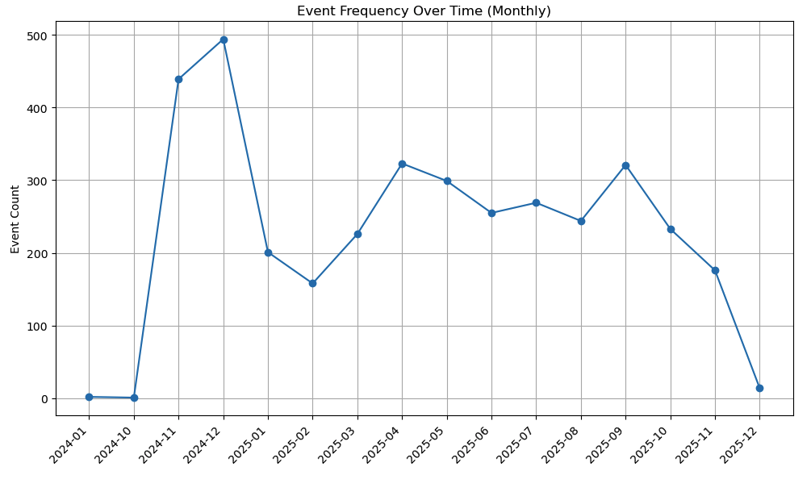
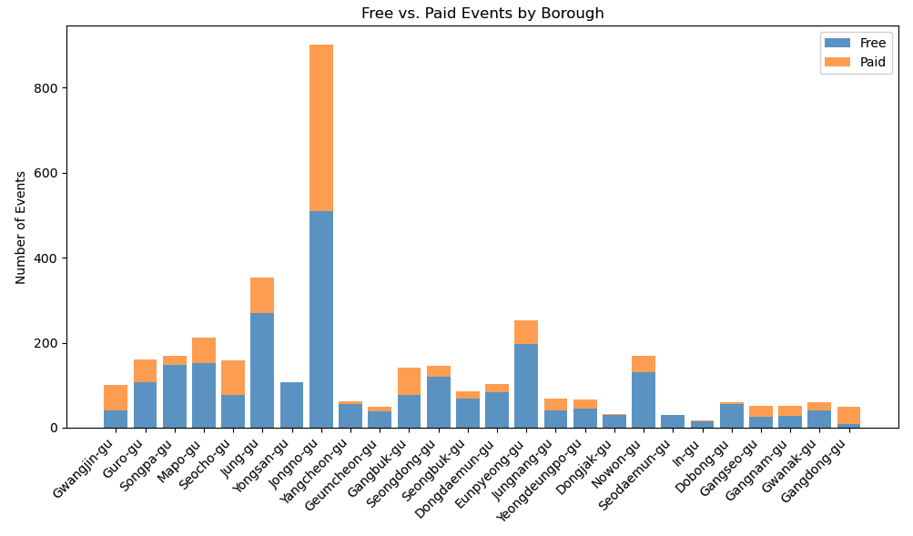
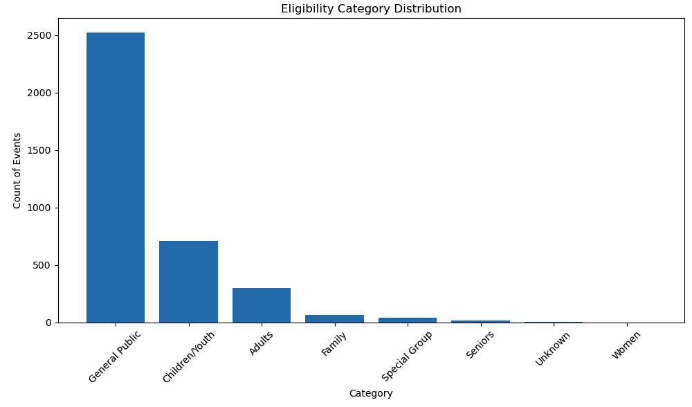

Visualizing Seoul's cultural vibrancy through seasonal events, borough comparisons, and dynamic storytelling
4 weeks project (2025)
LANDING PAGE ↗Seoul Festival Analytics is a data-driven, interactive web experience that visualizes Seoul's cultural vibrancy through seasonal events, borough comparisons, and dynamic storytelling.
Inspired by The Pudding, a digital publication known for turning complex data into visually compelling, scroll-driven narratives. This project applies the same philosophy to urban cultural data.
- Supervisor
- Professor Tak Yeon Lee
Prof. Lee was the first one introduce me to the concept of data visualization which led me to pursue this as a career path.
Based on the dataset summary, I designed a web experience that visualizes Seoul's cultural vibrancy through seasonal events and borough comparisons. The design concept is inspired by The Pudding.
Target Users
- Primary
- International and domestic travelers interested in discovering the best time and place to experience Seoul's unique offerings.
- Secondary
- Designers, students, and city planners interested in urban event distribution and cultural analytics.
Context of Use
The web is designed for use in travel planning, cultural research, and event discovery. Users can:
- Explore seasonal highlights and borough-specific event patterns
- Compare neighborhoods to find the best fit for their interests
- Gain insights into the cultural landscape of Seoul
This project is based on the data set of Seoul's events which is taken from the Seoul Open Data Plaza. The dataset is provided by the Seoul Metropolitan Government and is publicly available for research and analysis.
It includes information on each event's name, location, time, theme classification, cost structure, institution, and additional metadata.
The dataset was translated using Python running under terminal. Invalid or empty values for coordinates and dates were safely ignored.
- Original rows: 4,501
- Cleaned rows: 3,655
Geographic Distribution - Where events happen
Events cluster densely in central and northeastern Seoul, tracking the city's cultural and institutional centers. Latitude (37.45–37.70) and longitude (126.80–127.15) confirm full-city coverage.
- Top 5 boroughs: Jongno-gu (900), Jung-gu (352), Eunpyeong-gu (253), Mapo-gu (212), Songpa-gu (168)
- Bottom 5: Dobong-gu (17), Seodaemun-gu (31), Dongjak-gu (33), Gangdong-gu (50), Geumcheon-gu (50)
- Jongno-gu dominates, likely from its concentration of museums, galleries, performance halls, and historic institutions. With Jung-gu and Mapo-gu it forms a central cultural hub.
- Southern boroughs (Seocho, Gangnam, Songpa) show only moderate activity despite economic prominence, suggesting fewer public events relative to commercial activity.

Theme Classification - What types of events
Over 3,600 events across 15 themes.
- Education/Experience dominates at 1,632 events (nearly 45% of all events)
- Next largest: Classic (454), Exhibition/art (409), Concert (224)
- Smallest: Festival-citizen harmony (10), Festival-tradition/history (30), Festival-nature/landscape (32)
- Takeaway: Seoul's programming emphasizes participation, learning, and citizen involvement over pure performance entertainment.

Temporal Patterns - When events happen
Activity surged at the end of 2024, peaked in December 2024 (494 events), then declined into moderate 2025 fluctuations.
- Highest: December 2024 (494). Lowest: October 2024 (1) and December 2025 (14)
- 2025 stabilized in the 200–320 range for most months
- Seasonal pattern: year-end and spring/autumn peak; early winter and early year go quiet. Suggests correlation with festival seasons and city budget cycles.
- Caveat: extreme lows in early 2024 and late 2025 likely reflect partial data coverage, not true inactivity.

Cost & Eligibility - Who events are for
Cost structure: Most boroughs run more free than paid events, signaling accessible public programming. Exceptions like Seocho-gu and Gangdong-gu skew paid, likely reflecting commercialized or private venues. (Jongno-gu: 510 free vs 390 paid; Gangdong-gu: 9 free vs 41 paid.)

Eligibility: General Public dominates at 2,521 events (open access, no demographic restriction), followed by Children/Youth (712, developmental programming) and Adults (297). Small tailored categories include Special Group (42) and Women (1).

Future enhancements include live data feeds, advanced filtering and personalization, improved accessibility, and expanded analytics.